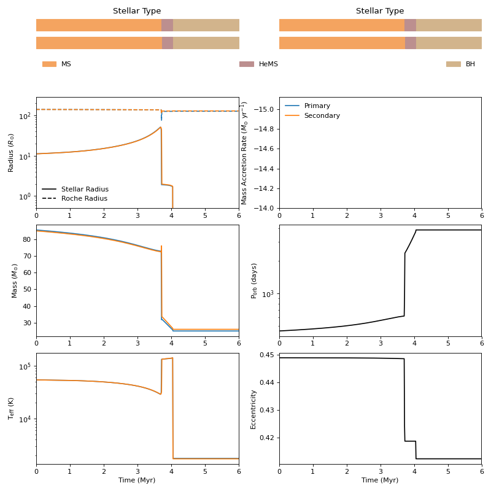
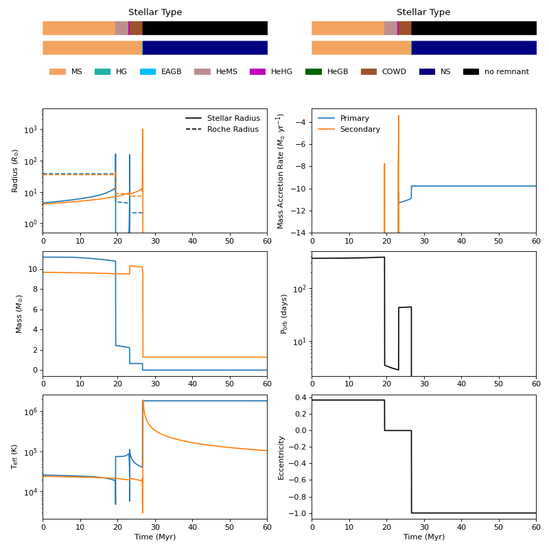

Evolving multiple binaries¶
Following on from evolving a single binary, we can also evolve multiple binaries. Let’s start by importing the necessary modules:
In [1]: from cosmic.sample.initialbinarytable import InitialBinaryTable
In [2]: from cosmic.evolve import Evolve
And use the same SSE and BSE dictionaries as before:
In [3]: SSEDict = {'stellar_engine': 'sse'}
In [4]: BSEDict = {
...: "pts1": 0.001, "pts2": 0.01, "pts3": 0.02, "zsun": 0.014, "windflag": 3,
...: "eddlimflag": 0, "neta": 0.5, "bwind": 0.0, "hewind": 0.5, "beta": 0.125,
...: "xi": 0.5, "acc2": 1.5, "LBV_flag": 1, "alpha1": [1.0, 1.0],
...: "lambdaf": 0.0, "ceflag": 1, "cekickflag": 2, "cemergeflag": 1,
...: "cehestarflag": 0, "qcflag": 5,
...: "qcrit_array": [0.0,0.0,0.0,0.0,0.0,0.0,0.0,0.0,0.0,0.0,0.0,0.0,0.0,0.0,0.0,0.0],
...: "kickflag": 5, "sigma": 265.0, "bhflag": 1, "bhsigmafrac": 1.0,
...: "sigmadiv": -20.0, "ecsn": 2.25, "ecsn_mlow": 1.6, "aic": 1, "ussn": 1,
...: "polar_kick_angle": 90.0,
...: "natal_kick_array": [[-100.0, -100.0, -100.0, -100.0, 0.0], [-100.0, -100.0, -100.0, -100.0, 0.0]],
...: "mm_mu_ns": 400.0, "mm_mu_bh": 200.0, "remnantflag": 4,
...: "fryer_mass_limit": 0, "mxns": 3.0, "fryer_fmix": 1.0,
...: "fryer_mcrit_nsbh": 5.75, "rembar_massloss": 0.5, "wd_mass_lim": 1,
...: "maltsev_mode": 0, "maltsev_fallback": 0.5, "maltsev_pf_prob": 0.1,
...: "pisn": -2, "ppi_co_shift": 0.0, "ppi_extra_ml": 0.0, "bhspinflag": 0,
...: "bhspinmag": 0.0, "grflag": 1, "eddfac": 10, "gamma": -2, "don_lim": -1,
...: "acc_lim": [-1, -1], "smt_periastron_check": 0, "tflag": 1, "ST_tide": 1,
...: "fprimc_array": [2.0/21.0,2.0/21.0,2.0/21.0,2.0/21.0,2.0/21.0,2.0/21.0,2.0/21.0,2.0/21.0,2.0/21.0,2.0/21.0,2.0/21.0,2.0/21.0,2.0/21.0,2.0/21.0,2.0/21.0,2.0/21.0],
...: "ifflag": 1, "wdflag": 1, "epsnov": 0.001, "bdecayfac": 1,
...: "bconst": 3000, "ck": 1000, "rejuv_fac": 1.0, "rejuvflag": 0,
...: "bhms_coll_flag": 0, "htpmb": 1, "ST_cr": 1, "rtmsflag": 0
...: }
...:
Below is an example for systems that could form GW150914 and GW170817 - like binaries.
In [5]: binary_set = InitialBinaryTable.InitialBinaries(
...: m1=[85.543645, 11.171469], m2=[84.99784, 6.67305],
...: porb=[446.795757, 170.758343], ecc=[0.448872, 0.370],
...: tphysf=[13700.0, 13700.0],
...: kstar1=[1, 1], kstar2=[1, 1],
...: metallicity=[0.002, 0.02]
...: )
...:
In [6]: print(binary_set)
kstar_1 kstar_2 mass_1 mass_2 ... bhspin_1 bhspin_2 tphys binfrac
0 1.0 1.0 85.543645 84.99784 ... 0.0 0.0 0.0 1.0
1 1.0 1.0 11.171469 6.67305 ... 0.0 0.0 0.0 1.0
[2 rows x 38 columns]
In [7]: import numpy as np
In [8]: np.random.seed(5)
In [9]: bpp, bcm, initC, kick_info = Evolve.evolve(initialbinarytable=binary_set, BSEDict=BSEDict, SSEDict=SSEDict)
As before, bpp, bcm, and initC are returned as pandas DataFrames which assign an index to each binary system we evolve. We can access each binary as follows:
In [10]: print(bpp.loc[0])
tphys mass_1 mass_2 ... bhspin_1 bhspin_2 bin_num
0 0.000000 85.543645 84.997840 ... 0.0 0.0 0
0 3.716919 72.740518 72.399424 ... 0.0 0.0 0
0 3.719160 31.876188 76.067471 ... 0.0 0.0 0
0 3.724093 31.784608 76.034872 ... 0.0 0.0 0
0 3.726205 32.229916 33.831229 ... 0.0 0.0 0
0 4.055902 25.623264 26.598448 ... 0.0 0.0 0
0 4.055902 25.623264 26.098448 ... 0.0 0.0 0
0 4.057240 25.597151 26.098448 ... 0.0 0.0 0
0 4.057240 25.097151 26.098448 ... 0.0 0.0 0
0 13700.000000 25.097151 26.098448 ... 0.0 0.0 0
[10 rows x 46 columns]
In [11]: print(bcm.loc[0])
tphys kstar_1 mass0_1 mass_1 ... SN_2 bin_state merger_type bin_num
0 0.0 1 85.543645 85.543645 ... 0 0 -001 0
0 13700.0 14 25.597151 25.097151 ... 1 0 -001 0
[2 rows x 41 columns]
In [12]: print(initC.loc[0])
kstar_1 1.0
kstar_2 1.0
mass_1 85.543645
mass_2 84.99784
porb 446.795757
...
fprimc_15 0.095238
alpha1_0 1.0
alpha1_1 1.0
acc_lim_0 -1
acc_lim_1 -1
Name: 0, Length: 156, dtype: object
In [13]: print(bpp.loc[1])
tphys mass_1 mass_2 ... bhspin_1 bhspin_2 bin_num
1 0.000000 11.171469 6.673050 ... 0.0 0.0 1
1 19.426944 10.768502 6.665579 ... 0.0 0.0 1
1 19.461095 10.766369 6.665624 ... 0.0 0.0 1
1 19.476572 10.544668 6.886250 ... 0.0 0.0 1
1 19.476572 10.544668 6.886250 ... 0.0 0.0 1
1 19.476572 2.415506 6.886250 ... 0.0 0.0 1
1 19.476572 2.415506 6.886250 ... 0.0 0.0 1
1 22.952116 2.226402 6.892061 ... 0.0 0.0 1
1 23.223331 2.180800 6.901261 ... 0.0 0.0 1
1 23.248495 1.856390 7.222694 ... 0.0 0.0 1
1 23.250426 1.360426 7.718622 ... 0.0 0.0 1
1 23.252244 0.650696 7.719235 ... 0.0 0.0 1
1 47.542095 0.650716 7.646037 ... 0.0 0.0 1
1 47.626579 0.650718 7.645258 ... 0.0 0.0 1
1 47.626579 0.650718 7.645258 ... 0.0 0.0 1
1 47.626579 0.000000 7.402012 ... 0.0 0.0 1
1 47.805491 0.000000 7.312049 ... 0.0 0.0 1
1 48.140079 0.000000 1.073095 ... 0.0 0.0 1
1 13700.000000 0.000000 1.073095 ... 0.0 0.0 1
[19 rows x 46 columns]
The plotting function can also take in multiple binaries. Let’s plot both the GW150914-like progenitor evolution and the GW170817-like progenitor evolutions. For the GW170817-like progenitor, we expect most of the evolution to take place in the first ~60 Myr.
In [14]: from cosmic.plotting import evolve_and_plot
In [15]: fig = evolve_and_plot(binary_set, t_min=None, t_max=[6.0, 60.0], BSEDict=BSEDict, SSEDict=SSEDict, sys_obs={})

{kind=link}
{kind=link}

{kind=link}
{kind=link}